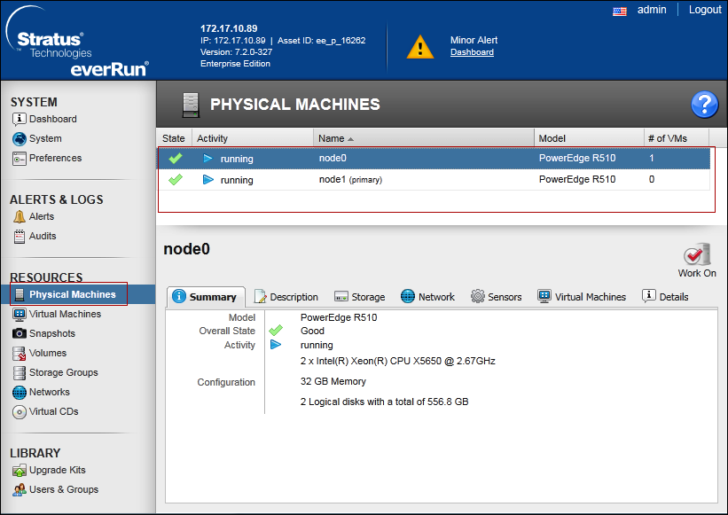
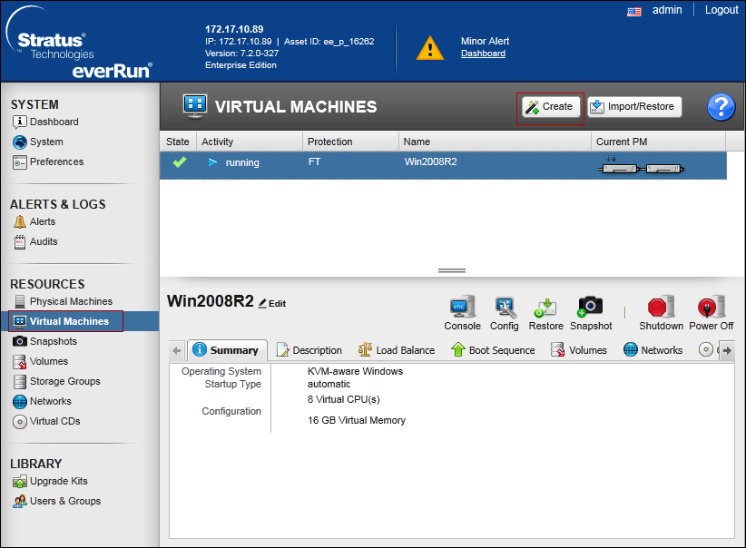
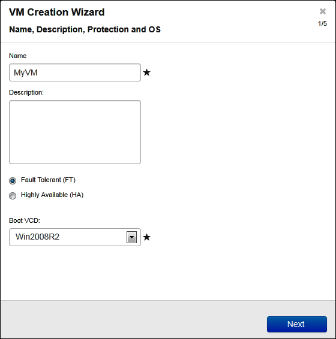
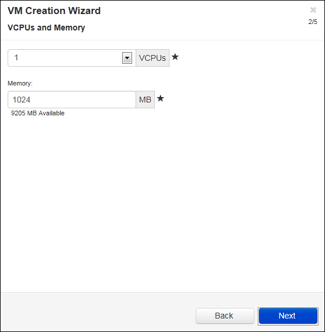
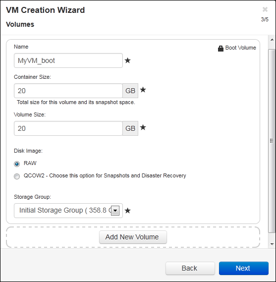
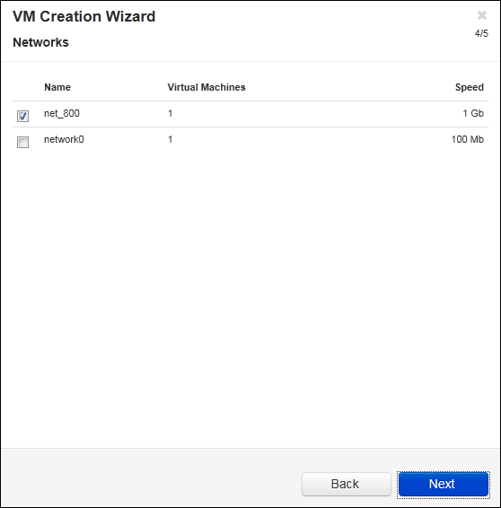
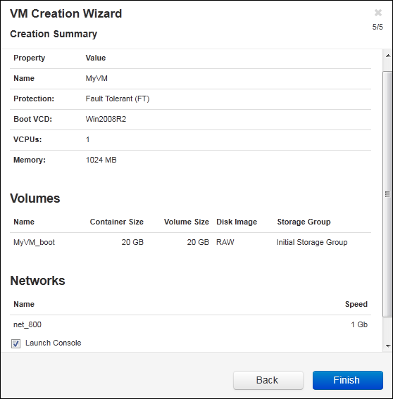

Create New Virtual Machine
This section lists the steps required to create a new virtual machine (VM) to install a guest operating system on your everRun system.
NOTE: If you need to create a Windows Server 2003 VM, see the Creating a New Windows Server 2003 Virtual Machine section of the everRun’s User’s Guide.
You must perform a different procedure to create a Windows Server 2003 VM.
- Review the prerequisites and considerations for allocating CPUs, memory, storage, and network resources to the VM, as listed in Planning Virtual Machine Resources.
- Create a bootable virtual CD (VCD) of the Windows or Linux installation media, as described in Creating a Virtual CD. The bootable VCD must be a single CD or DVD. Multiple CDs or DVDs are not supported.
- Ensure that both PMs of the everRun system are online; otherwise, the system cannot properly create the VM.
- If you want to protect the new VM with Disaster Recovery (DR), wait until after you finish installing the guest operating system. If necessary, open the VM console and verify that the guest is healthy and responsive before enabling DR protection in the One View Console. While setting up protected VM , assign minimum 10 Cores to VM.
- Do not install any extra applications on VM. It may affect performance of Notification.
- Do not keep SMC or Desigo CC User Interface in open state on VM. It may affect performance of Notification.
- On the Physical Machines page, verify that both PMs are in the running state and that neither PM is in maintenance mode or in the process of synchronizing.
See The Physical Machines Page section of the everRun’s User’s Guide.

- On the Virtual Machines page, click Create to open the VM Creation Wizard.
See The Virtual Machines Page section of the everRun’s User’s Guide. 
- On the Name, Description, Protection and OS page:
- Enter the name and an optional description for the VM as they will display in the everRun Availability Console.
- Select the level of protection to use for the VM:
a) High Availability (HA) - Provides basic failover and recovery, with some faults requiring an (automatic) VM reboot for recovery. Use HA for applications that can tolerate some downtime and that do not need the downtime protection that FT provides.
b) Fault Tolerant (FT) - Transparently protects an application by creating a redundant environment for a VM running across two physical machines. Use FT for applications that need greater downtime protection than HA provides.
NOTE: For more information about these levels of protection, see the Modes of Operation section of the everRun’s User’s Guide.
Select the Boot VCD that contains the operating system you want to install. - Click Next.

- On the vCPUs and Memory page, enter the number of vCPUs and the amount of Memory to assign to the VM. For more information, see Planning Virtual Machine vCPUs and Planning Virtual Machine Memory. To continue, click Next.

- On the Volumes page, do the following:
- Enter the Name of the boot volume as it will display in the everRun Availability Console.
- Enter the Container Size and Volume Size of the volume to create in gigabytes (GB). The container size is the total size for the volume including extra space to store snapshots. The volume size is the portion of the container that is available to the guest operating system. For more information about allocating storage, see Sizing Volume Containers and Planning Virtual Machine Storage.
- Select the Disk Image format:
a) RAW - raw disk format
b) QCOW2 - QEMU Copy On Write (QCOW2) format, which supports snapshots and Disaster Recovery - Select the Storage Group in which to create the volume.
- If applicable, create additional data volumes by clicking Add New Volume and specifying the parameters for each volume. (You can also add volumes after you create the VM by using the Reprovision Virtual Machine wizard, as described in Creating a Volume in a Virtual Machine.)
- Click Next.

- On the Networks page, select the shared networks to attach to the VM. For more information, see the Planning Virtual Machine Networks section of the everRun’s User’s Guide. Click Next.

- On the Creation Summary page:
- Review the creation summary. If you need to make changes, click Back.
- If you want to prevent a console session from automatically starting to observe the software installation, deselect Launch Console.
- To accept the VM as provisioned and begin the software installation, click Finish.

- If applicable, observe the progress of the installation of the operating system and respond to any prompts in the VM console session.
- After you install the operating system, configure the additional resources and software necessary for production use, as described in the Configuring Windows-based Virtual Machines and the Configuring Linux-based Virtual Machines sections of the everRun’s User’s Guide.

NOTE 1:
If the primary PM fails or the VM crashes before the final reboot after the installation process is completed, the installation of the VM may need to be restarted.
NOTE 2:
The VM may not reboot if installations of any of the following are stopped:
a) The guest operating system, including the configuration steps
b) Any middleware or applications that manipulate system files.